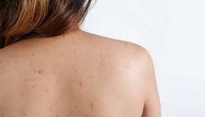

Điều trị viêm nang lông là quá trình kiểm soát tình trạng viêm xảy ra tại nang lông nhằm hạn chế lan rộng, giảm tái phát và phòng ngừa biến chứng thâm, sẹo. Mức độ đáp ứng phụ thuộc vào nguyên nhân, phạm vi tổn thương và đặc điểm cơ địa của từng người.
Viêm nang lông có thể xuất hiện ở nhiều vị trí như lưng, ngực, đùi hoặc vùng cánh tay. Tổn thương thường biểu hiện bằng sẩn đỏ, mụn mủ nhỏ quanh nang lông và có thể gây ngứa hoặc khó chịu nhẹ. Việc xử trí cần dựa trên đánh giá lâm sàng thay vì áp dụng một cách đồng loạt.
Hiểu đúng về cơ chế viêm nang lông
Nang lông là cấu trúc bao quanh chân tóc hoặc lông trên da. Khi cổ nang lông bị bít tắc do bã nhờn, tế bào sừng hoặc ma sát cơ học, môi trường thuận lợi cho vi sinh vật phát triển có thể hình thành. Phản ứng viêm tại chỗ từ đó xuất hiện.
Cơ chế này có thể liên quan đến:
- Tăng tiết bã nhờn và mồ hôi.
- Rối loạn quá trình sừng hóa làm bít tắc cổ nang lông.
- Ma sát kéo dài từ quần áo bó sát.
- Yếu tố vi sinh cư trú trên da.
Việc xác định cơ chế chiếm ưu thế giúp định hướng cách chăm sóc và kiểm soát phù hợp hơn.
Nguyên tắc chung trong điều trị viêm nang lông
Điều trị viêm nang lông không chỉ tập trung vào tổn thương hiện tại mà còn hướng đến việc hạn chế tái phát. Các nguyên tắc thường được cân nhắc gồm:
- Giảm yếu tố gây bít tắc nang lông.
- Hạn chế ma sát và kích thích cơ học lên vùng da tổn thương.
- Duy trì vệ sinh da phù hợp với loại da.
- Theo dõi diễn tiến để phát hiện sớm dấu hiệu lan rộng.
Trong nhiều trường hợp nhẹ, thay đổi thói quen sinh hoạt và chăm sóc da có thể giúp cải thiện dần tình trạng viêm.
Chăm sóc da hỗ trợ kiểm soát viêm nang lông
Chăm sóc da đúng cách đóng vai trò quan trọng trong quá trình kiểm soát viêm nang lông. Một số lưu ý thường được khuyến nghị bao gồm:
- Tắm rửa sau khi vận động hoặc đổ nhiều mồ hôi.
- Lựa chọn trang phục rộng, thấm hút tốt.
- Tránh cào gãi hoặc chà xát mạnh lên vùng da viêm.
- Ưu tiên sản phẩm làm sạch dịu nhẹ, phù hợp với da nhạy cảm.

Việc tẩy tế bào sừng cơ học quá mức có thể làm tổn thương hàng rào bảo vệ da, từ đó khiến tình trạng viêm kéo dài hơn. Do đó, cần điều chỉnh cường độ chăm sóc tùy theo phản ứng của da.
Điều trị viêm nang lông theo từng vị trí
Mỗi vị trí trên cơ thể có đặc điểm sinh lý da khác nhau. Ví dụ, vùng lưng thường có mật độ tuyến bã cao và dễ bí mồ hôi. Trong những trường hợp này, việc tìm hiểu thêm về viêm lỗ chân lông ở lưng có thể giúp nhận diện yếu tố liên quan và điều chỉnh chăm sóc phù hợp.
Ở vùng đùi hoặc cánh tay, yếu tố ma sát từ quần áo và vận động có thể đóng vai trò đáng kể. Vì vậy, lựa chọn chất liệu vải và duy trì da khô thoáng thường được xem là bước hỗ trợ quan trọng.
Khi nào cần đánh giá chuyên khoa?
Không phải tất cả trường hợp viêm nang lông đều tự cải thiện. Việc thăm khám có thể được cân nhắc khi:
- Tổn thương kéo dài nhiều tuần.
- Viêm tái phát nhiều lần trong thời gian ngắn.
- Có dấu hiệu lan rộng hoặc đau tăng dần.
- Xuất hiện thâm hoặc sẹo sau viêm.
Đánh giá lâm sàng giúp phân biệt viêm nang lông với các bệnh lý da khác như mụn trứng cá vùng thân mình hoặc viêm da do nấm. Mỗi tình trạng có thể yêu cầu cách tiếp cận khác nhau.
Phòng ngừa tái phát viêm nang lông
Kiểm soát yếu tố nguy cơ là một phần quan trọng trong điều trị viêm nang lông. Một số biện pháp thường được khuyến nghị gồm:
- Duy trì vệ sinh da đều đặn nhưng không quá mức.
- Tránh mặc quần áo ẩm ướt trong thời gian dài.
- Hạn chế sử dụng sản phẩm gây bít tắc lỗ chân lông.
- Theo dõi phản ứng của da khi thay đổi mỹ phẩm.
Ở những người có cơ địa da dầu hoặc dễ tăng tiết mồ hôi, việc điều chỉnh thói quen sinh hoạt có thể góp phần hạn chế tái phát. Tuy nhiên, hiệu quả còn phụ thuộc vào mức độ tổn thương ban đầu.
Tầm quan trọng của đánh giá cá nhân hóa
Mỗi trường hợp viêm nang lông có đặc điểm riêng về mức độ viêm, phạm vi tổn thương và yếu tố nền. Vì vậy, không nên áp dụng cùng một cách xử trí cho tất cả. Đánh giá lâm sàng giúp xác định nguyên nhân chiếm ưu thế và xây dựng hướng chăm sóc phù hợp hơn.
Việc theo dõi diễn tiến theo thời gian cũng có ý nghĩa trong điều chỉnh cách tiếp cận. Nếu tổn thương không cải thiện hoặc có xu hướng nặng hơn, cần được xem xét lại dưới góc độ chuyên khoa.
Khi các biện pháp tự chăm sóc không mang lại kết quả như mong đợi, việc thăm khám tại cơ sở chuyên khoa da liễu sẽ giúp xác định chính xác nguyên nhân và mức độ tổn thương. Từ đó, bác sĩ có thể đưa ra phác đồ điều trị phù hợp với đặc điểm cơ địa của từng người. Nếu bạn đang tìm kiếm địa chỉ thăm khám uy tín, có thể tham khảo Phòng khám Da Liễu LG để được tư vấn và hỗ trợ chuyên sâu.